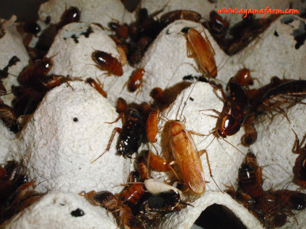
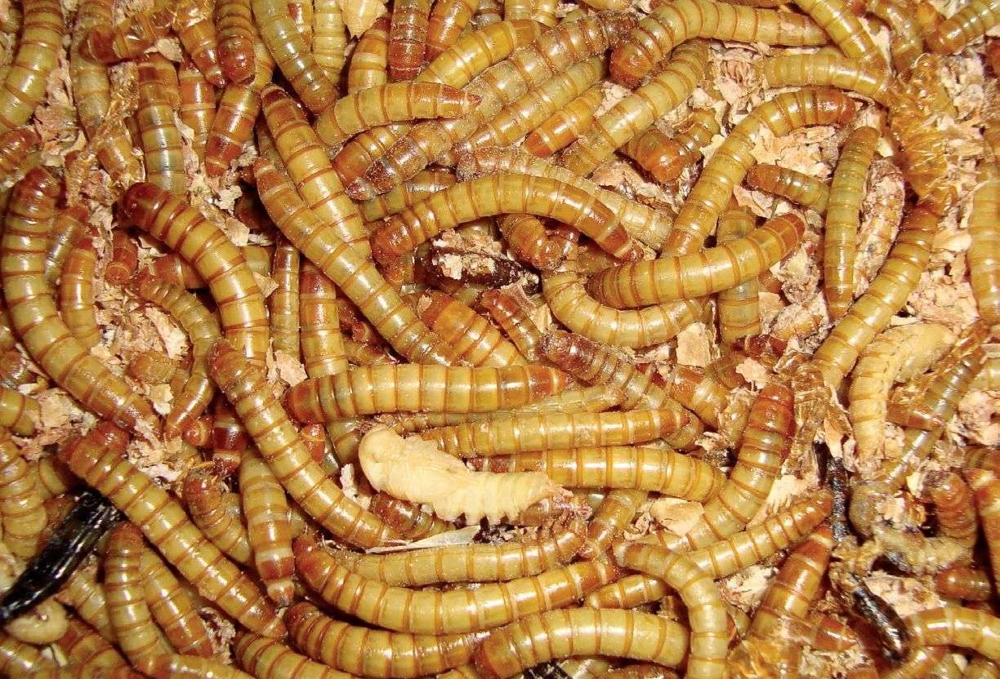

A madárpókok a madárpókfélék (Theraphosidae) családjába tartoznak. Napjainkban igen kedvelt házikedvencek, mivel nem igényelnek sok időt, és igen egyszerű a tartásuk. Nem igénylik a babusgatást és az etetés sem szükséges napiszinten. Egyedül talán a nedvesség/páratartalom adagolása lehet kissé bonyolult a kezdők számára. Ezt azonban az ember idővel kitapasztalja.
Madárpók vásárlás előtt nemcsak érdemes, de egyenesen KÖTELEZŐ olvasni és tanulni mind róluk, mind pedig a tartásukról, nem csak a kedvenced, hanem saját magad érdekében is!
Általános tudnivalók
A nőstények sokkal szebbek és nagyobbak a hímeknél. Néhány kivételes esetben a hímeknek élénkebb a színe vagy esetleg nyúlánkabbak.
Néhány fajnál jelen van az ivari kétalakúság, ami azt jelent hogy a nőstény és a hím szinte alig hasonlítanak. Például amíg a nőstény színe mondjuk bársonyosan fekete narancssárga mintákkal a potrohon, addig a hím fakó szürke és a mintázat sem olyan élénk
Csípésük nem halálos. A gyengébb mérgű fajok marása felér egy méhcsípéssel. Az erősebb mérgű egyedeknél csak komoly tünetek jelentkeznek, mint például izomfájdalom, hányinger, légszomj.
A legtöbb faj esetében a potrohán jelen vannak ún. csalánszőrök. Ezeket a mikroszkopikus lándzsákat védekezéskor söprik a levegőbe. Bőrre kerülve erős, hosszú ideig tartó viszketést okoznak, nyálkahártyába kerülve orrfolyást, a szembe jutva ugyancsak erős viszketést és könnyezést váltanak ki.
Egyes fajok elérhetik a több mint 20 centiméteres lábfesztávolságot!
Milyen előnyökkel jár a tartásuk?
Mutatós házikedvencek
Viszonylag olcsó a tartásuk
Nem igényelnek órákat a szabadidődből
Tökéletesen elvannak egymagukban, nem igénylik a játékot
Mit is esznek?
Mivel ők ragadozó állatok, így az étrendjük kisebb ízeltlábúakból áll. A lisztkukactól egészen a tücskön át a csótányig bármit megesznek. Ezeket egy kisállat kereskedésben eszméletlen olcsón lehet kapni, egy doboznyi lisztkukac 100 Ft (legalább is ott, ahol én veszem). Nagy gyűjteménynél érdemes tenyészteni az eleségállatokat. Terjengenek az interneten olyan videók ahol nagyobb példányokat egérrel etetnek, ez azonban rosszul is elsülhet, mivel az egér megsebezheti, akár meg is ölheti a pókot.


Eleségállatok
A következő videón az egyik növendék példányom etetése látható:
Tippek és tanácsok első pók választásnál
Tapasztalat híján nem érdemes ázsiai vagy afrikai fajt választani (ezzel kapcsolatban részletek a másik oldalon)
Nem csak a madárpókokról kell tanulnod általánosságban, hanem arról a fajról is, amelyet kinéztél magadnak. Ez vonatkozik páratartalomra, viselkedésre, élőhelyre, stb.
Érdemes kicsiben kezdeni. Ennek az az előnye, hogy a tapasztalatod a pók méretével együtt fog nőni.
Semmiképpen sem kérj tanácsot egy állatkereskedésben, mivel sokszor fogalmuk sincs a pókok tartásáról és téves információkkal szolgálnak. Menj fel fórumokra, nézz videókat YouTube-on, lépj be a témával kapcsolatos csoportokba. Hidd el, ezeken a helyeken az emberek értik a dolgukat, fordulj feléjük bizalommal :)
Ha kutakodsz a témában látni fogsz a páratartalommal kapcsolatban százalékos értékeket. Ezeket nem érdemes követni, mert ezt úgysem tudod mindig ugyan olyan szinten tartani. A "szárazabb" fajoknál bizonyos időközönként a terrárium egyik sarkát jócskán megöntözni, és hagyni kell kiszáradni a talajt. Ettől függetlenül persze mindig legyen bent egy tiszta vízzel teli tál. Amikor kiszáradt, ismételd meg egy másik sarokban. A nedvességkedvelők esetében elég 1-2 hetente egy (vegyszerektől steril) kézi permetezővel lefújni a helyüket és ennyi. Persze ettől függetlenül nekik is lehet táljuk.